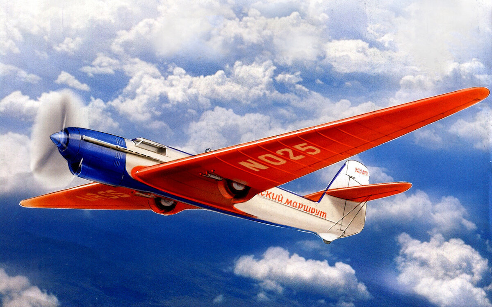

Авиация
Тяжёлый бомбардировщик С-22 «Илья Муромец»
- Генеральный конструктор: И. И. Сикорский
- Год принятия на вооружение: 1914 (первые полёты и начало серийного производства состоялись в 1913 году)
- Применение: Первая мировая война, Гражданская война в России.
Первый в мире тяжёлый бомбардировщик, изначально создавался также в качестве первого же в мире комфортабельного воздушного лайнера с закрытым салоном, в качестве которого имел невозможную на более скоростных моделях прогулочную площадку для прогулок пассажиров «на открытом воздухе» над фюзеляжем. Установил множество рекордов грузоподъёмности, длительности полёта и других. В начале Первой мировой войны самолёты «Илья Муромец» были сведены в «Эскадру воздушных кораблей» — первое в мире соединение дальней авиации. Выпускался несколькими сериями с отдельными модернизациями.
Патрульный гидросамолёт М-5

- Генеральный конструктор: Д. П. Григорович
- Год начала эксплуатации: 1915
- Год завершения эксплуатации: 1924
- Применение: Первая мировая война, Гражданская война в России.
Лучший гидросамолёт своего времени, в отличие от более ранних аналогичных летающих лодок Григоровича выпускался большой серией, значительно превосходя зарубежные аналоги за счёт того, что в нём в качестве поплавка использовался сам фюзеляж, вследствие чего он мог использоваться даже на умеренной волне, а лётно-технические характеристики превосходили многие наземные самолёты. Позднее ему на смену пришёл ещё более совершенный самолёт М-9.
Многоцелевой гидросамолёт М-9

- Генеральный конструктор: Д. П. Григорович
- Год начала эксплуатации: 1916
- Год завершения эксплуатации: Середина 1920-х
- Применение: Первая мировая война, Гражданская война в России.
Лучший гидросамолёт своего времени, в дополнение к хорошим качествам своего предшественника М-5 получил возможность взлетать и садиться на снег, а также значительно увеличенную грузоподъёмность. Это позволило не только вооружить его бомбами, но также впервые в мире установить на гидросамолёт пушку. В другом варианте на него могла устанавливаться радиостанция, что создавало очень большие возможности для оперативной разведки и корректировки огня. М-9 стал также первым в мире гидросамолётом, на котором была выполнена петля Нестерова. Самолёт превосходил все другие гидросамолёты того времени в воздушных боях и широко использовался отечественными гидроавианосцами времён Первой мировой войны.
Тяжёлый бомбардировщик ТБ-1

- Генеральный конструктор: А. Н. Туполев
- Год начала эксплуатации: 1929
- Год завершения эксплуатации: 1936 (в армии), 1945 (в транспортной авиации)
- Применение (в качестве транспортного самолета): Конфликт на Китайско-восточной железной дороге, Конфликт у озера Хасан, Конфликт в районе реки Халхин-Гол и, видимо, прочие войны начала 1940-х
Первый в мире серийный цельнометаллический двухмоторный бомбардировщик. Самый массовый тяжёлый бомбардировщик своего времени. Прославился также в качестве самолёта гражданской и транспортной авиации, в том числе при спасении Челюскинцев и в рекордном перелёте в США.
Самолёт для получения рекорда дальности АНТ-25 
Самолёт с самой большой для своего времени дальностью полёта. Обеспечил, помимо прочего, рекордный перелёт в США через Северный Полюс.
Лёгкий многоцелевой самолёт У-2 (По-2)

- Генеральный конструктор: Н. Н. Поликарпов
- Год начала эксплуатации: 1928
- Годы производства: 1928—1954
- Применение: Войны и конфликты СССР в 1930-х, Зимняя война, Вторая Мировая Война, Корейская война.
Один из самых массовых самолётов в истории авиации, известный также как «Кукурузник». Изначально был создан как весьма удачный самолёт первоначального обучения лётчиков, но впоследствии широко использовался с небольшими модификациями как многоцелевой выполняя функции связного, транспортного, сельскохозяйственного, санитарного, пассажирского, разведывательного и даже лёгкого ночного бомбардировщика и лёгкого штурмовика. Малой серией выпускался и как поплавковый гидросамолёт. Серийно производился с 1930 по 1959 годы. В различных количествах эксплуатировался в 17 странах мира.
Сверхтяжёлый многоцелевой вертолёт В-12 (Ми-12)
- Генеральный конструктор: М. Л. Миль
- Год принятия на вооружение: — (опытная эксплуатация с 1968 года)
- Производитель: Московский вертолётный завод (ныне Московский вертолётный завод имени М. Л. Миля)
- Год завершения эксплуатации: 1974
Самый тяжёлый и грузоподъёмный из когда-либо построенных в мире вертолётов. Официально так и не получил названия Ми-12, оставшись с временным В-12. В 1969 году установил до сих пор не побитые мировые рекорды грузоподъёмности. Всего было построено два опытных экземпляра машины, выполнявших, впрочем, и международные перелёты, в частности на авиасалон в Ле-Бурже 1971 года. Тогда же был выполнен ряд демонстрационных полётов в европейских столицах. Оба они находятся в музеях Подмосковья.
Сверхзвуковой пассажирский самолёт Ту-144

- Генеральный конструктор: А. Н. Туполев, А. А. Туполев
- Год начала эксплуатации: 1975
- Год завершения эксплуатации: 1978 (1999)
Первый в мире взлетевший сверхзвуковой пассажирский авиалайнер.
Многофункциональный истребитель Су-57

- Генеральный конструктор: А. Н. Давиденко, М. Стрелец
- Год принятия на вооружение: Проходит опытную эксплуатацию
- Производитель: Комсомольский-на-Амуре авиационный завод имени Ю. А. Гагарина
- Применение: Боевые действия в Сирии.
- Год снятия с вооружения: В строю
Один из первых в мире истребителей 5 поколения, обладающий уникальными качествами. Фактически первый в мире полноценный многофункциональный истребитель 5 поколения.